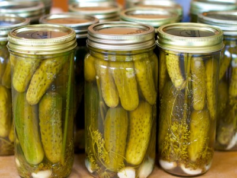

|  |
Food's name: Pickles▸ Ingredients:
▸ Time to prepare: 7-14 days ▸ Approx quantity: 2 jars just eaten |
▸ Detailed recipe:
Step 1: Prepare:
- Prepare 2 clean glass jars of 1-liter capacity to prepare for pickling cucumbers.
- Wash the cucumbers. Make sure the cucumbers are firm and remove the unsatisfactory ones to use for other purposes. Dry the cucumbers and put them in the
refrigerator overnight. To keep pickles crispy, soak them within 24 hours of picking. Choose cucumbers that are about 10cm long or less.
- Sterilize the jar by placing it in a large basin of warm water or a special pot for about 10 to 15 minutes. Carefully remove the vial with gloves and kitchen tongs.
- Place the jar on the counter to cool.
Step 2: Processing pickled cucumbers:
- Put 3-5 cloves of peeled garlic in each jar.
- Add 1-2 sprigs of fresh dill to each jar. Make sure to rinse and dry the dill before putting it in the jar.
- 1 teaspoon (3g) of whole pepper and 2 teaspoons (6g) of mustard seeds can be added to each jar. Some people also like to add 2 teaspoons (4g) of onion powder
or a little minced fresh onion.
- For extra spiciness, add 1 chili or 2 teaspoons (6g) of ground red pepper.
- Add saltwater. Put 5 cups of white vinegar with 5 cups of water and 1/2 cup of pickling salt in a pot. Bring the water to a boil and turn off the heat, remove the pot
immediately.
- Place as many cucumbers or slices in the jar as you can. You should stack the cucumbers to the full mouth of the jar.
- Pour brine over the cucumbers until the jar is full. Leave only a small space (1cm) on the top of the jar.
- Close the lid and lock ring to close the mouth of the jar.
Step 3: Pickled cucumbers:
- Soak the jar in boiling water. Only soak the vial for about 5 minutes and remove it when the time is up. Do not soak the jar in boiling water for longer than 5 minutes
as the cucumbers will lose their crispiness.
- Wipe the jar of cucumbers with a clean towel and let them cool before placing them in the kitchen cupboard.
- Wait at least 1 week before eating for the seasoning to infuse the cucumbers.
=>After your efforts and patience, you will have yourself a dish that will boost your gut health.
▸ Calories and other nutrients: in 35g pickles